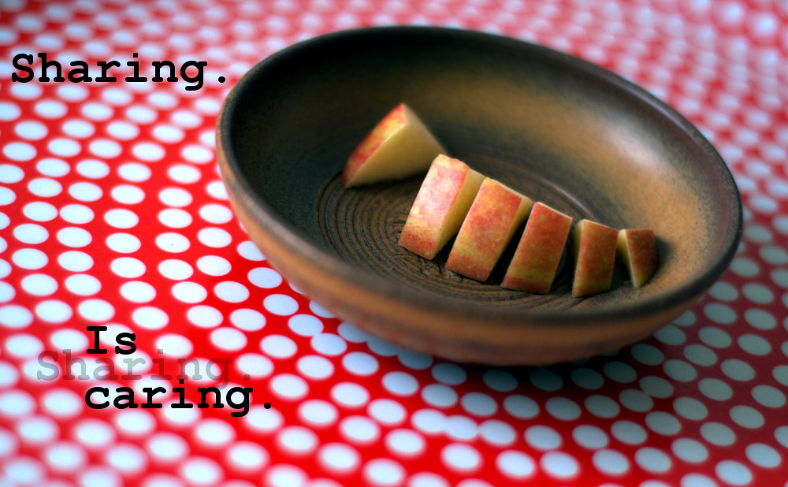

So in my previous article on The Sovereign of Science, I ranted about how I feel the reproducibility issues science face are a result of the lack of feedback scientists receive pertaining to the quality of their work. Or, to put it more simply, none of the masters of science (the funding bodies, journals and universities) care if their science is any good, and so it inevitably isn’t.
Hopefully we can agree that this isn’t ideal.
But what can we do about?
Well I can’t do much as a lowly PhD student. I simply don’t have the power. However, if you happen to be head of a major funding body, and have presumably been struck by some strange cosmic radiation that has inspired you to suddenly realise you should probably care about the quality of the science you fund, then I have ideas.
I should stress that I don’t think these ideas are perfect. But I do feel they outline an objectively better way of doing science, that saves scientists time, saves money, and finally rewards scientists for doing quality research, thus improving the quality of science as a whole and eventually addressing the reproducibility problem.
Firstly: The journals gotta go
(ref:exit) And never come back! Image credit: Unsplash
Seriously. The only contributions to science they make are harmful ones:
- They reduce the accessibility of science by locking it behind paywalls
- They don’t care about quality
- They steal billions from both funders and universities
So why put up with them?
I propose that the major research councils either, take 1% of what they spend a year on open access fees, and instead create a new platform where the research they fund will be published, or just throw their weight behind the Peer Community in.
The latter makes more sense to me as it’d require less effort on their part, but I propose the former as I suspect the people who run these bodies may prefer to create their own initiative for egotistical reasons. Not that I’m cynical…
A new publication model
(ref:newspaper) Image credit: Unsplash
All the work published here will of course be freely available. In order to publish, authors would be required to create an account, with their real name, contact information and crucially, their research institution.
This is so the platform has no anonymity and both individual scientists, and their institutions can be held accountable for any poor behaviour.
As soon as a paper is uploaded by the authors, it would only be viewable by peer reviewers. Before the paper is freely viewable, the authors would be required to review as many papers as their own has authors. So if the paper has 5 authors, they must peer review 5 papers. This could all be done by one author, each author could do 1, or anything in between.
This ensures that there will always be enough peer reviewers available.
Once they have completed this requirement, the paper would go live. If the paper has received at least 2 peer reviews supporting the quality of the work, it would be designated as having been reviewed and approved. If not, it would instead be designated as “under review”.
Rethinking peer review
(ref:typewriter) Image credit: Unsplash

Here is what I suspect will be my most controversial suggestion:
The peer review process should be completely transparent.
I haven’t really addressed this till now, but you may have thought something along the lines of:
“Isn’t the peer review process supposed to ensure only good science gets published?”
And yeah, that sure is what it’s supposed to do. Unfortunately, the state of science clearly shows it isn’t working well enough. The peer review process is anonymous, so authors never know the identity of their reviewers, and the comments they make are also never made public.
The argument in favour of this system is that it allows the reviews to speak freely, without fear that the authors may retaliate by refusing collaborations, or returning harsher reviews of their own work. In smaller fields the authors and reviewers may well know one another personally, and so a transparent system could also be a source of conflict.
I disagree with this assessment. If peer review were completely public, and either a reviewer or author/s behaved poorly, they could warned, denied future funding or even removed by their own institution, as this behaviour would reflect poorly on them as well. I suspect this would be enough to keep peer review civil.
It would also allow us to hold peer reviewers to account if they give bad science a pass. But why would they ever do that? Well, as I touched on in the prior post, scientists are often woefully statistically incompetent, so even if they read the paper properly, they may be too ignorant to notice poor practices such as a study being underpowered, or data not meeting the assumptions of the statical tests performed.
And remember, peer reviewers are volunteers, they don’t get paid or rewarded at all for their time under the current system.
So imagine: you are invited to review a paper in your field. You accept, thinking you aren’t too busy at the minute and you’ll be able to squeeze it in. But then you remember the abstract deadline for a conference is fast approaching. You also need to finish writing some grants. And you have your own papers to write, teaching to do, and stupid university bureaucracy to waste your time on. So you forget about the paper you said you’d review until the editor says the deadlines approaching soon. Now you’re really scrambling. You quickly skim through the paper, hope the other reviewer reads it properly and give the authors the benefit of the doubt that it’s probably fine.
Again, there’s no reward for doing this at all, let alone for doing it well, and no punishment if you do it poorly. So you cut corners. And this is how at lot of science goes.
The opposite can also happen, where a reviewer just doesn’t like your results and gives you a hard time, but as an author you need their approval to publish, so you end up doing whatever they want, even if you don’t really agree with them.
By making the whole process open, it forces both authors and peer reviewers to take it seriously and do it well. And even once a paper has been reviewed twice, it could still be reviewed by other academics if they feel they’ve something to add. This way, even if both the first reviewers miss something, it’s very likely that someone else will eventually notice an issue and publicly notify the authors.
A system like this also lends itself well to making small tweaks. Perhaps early career researchers could get something like a “learner” badge, where their peer reviews are only worth half as much as more experienced colleagues. PhD students could be required to do a certain number of peer reviews in order to be awarded their doctorate.
To add to this, I would show the latest iteration of a given paper on the website, but I would allow users to go back and see each prior version of the paper. This could be particularly useful for students to learn from.
Providing a reason to care about reproducibility
(ref:sharing) Image credit: Kristian Niemi

I would also propose papers be given some kind of “reproducibility score”. I imagine this functioning like a checklist:
- Is the raw experimental data published?
- Is the paper itself written in plain text, with reproducible figures/tables?
- Is the script/s used to analyse the data included?
- Is the software used free and open-source?
- Was version control used for the script/s and/or paper?
- Is a container with all the software used provided?
If all the criteria are met, then the paper gets a perfect score. This score could be tacked at both the level of individual scientists, and for institutions. This would serve as a nice lazy indicator as to the quality of the scientist/institution. Funding bodies could use this when awarding grants, and postdocs/students could use it to help decide where they work/study.
As has been suggested elsewhere, I would also provide a separate doi for the paper, data and container, so these can receive citation and the authors can continue to receive proper credit for their work.
The key here is that this provides an incentive for scientists to make their research more transparent and reproducible, not to evaluate the impact or even the quality of the work itself.
The open peer review should sort that part.
Hopefully…
If their studies are underpowered, or their stats rubbish, this system would make it obvious and easy to call out. This would reflect poorly on the authors, and perhaps more importantly on their institution. Thus, it would behove them to make sure their researchers are well trained and equipped to follow best practises.
Sounds great, but who pays for this system?
(ref:coins) Image credit: Unsplash

I would suggest a combination of the funding bodies and major research institutions. Pragmatically, I think it makes sense for universities to provide the servers to host their own research, and for software to automatically back this up to other university servers. This way, even if the servers are damaged/destroyed (in a fire for example), nothing would be lost.
The cost of this would be extremely low, especially compared to what is currently spent by funders on open access fees, and most definitely less than the literal billions universities are spending on journal subscriptions. I’m pretty confident this proposed system would cost less than 1% of what is currently spent to both establish and maintain. And it would mean scientists don’t have to waste huge amounts of time bending over backwards to appease asinine journal requirements.
It’s not like putting a .pdf on the internet costs a lot, which effectively all publication entails. This website costs me exactly nothing. The system I’m proposing is effectively just a big distributed website with a particular structure, so the cost would be very low, especially when distributed across all research institutions.
Feedback welcome
(ref:head) Sometimes I wonder if I’m just too idealistic. Image credit: Unsplash

This is of course just my 2 cents. And I should reiterate, I’m sure these proposals would have their own issues, and certainly introduce some major teething pains. But I still feel it’s a big improvement over what we’ve got. If you’ve any feedback, positive or negative, it’s very welcome. If it’s really good I may even update these articles.
Perhaps I’m getting ahead of myself though. I didn’t write these expecting to start a revolution. We have the system we do because the people with power are either ignorant, apathetic or both, and I don’t expect that to change anytime soon.
This was more an exercise in articulating my thoughts, and getting some of this vitriol out of my head. And I’ve enjoyed it, so I’ll chalk it up as a win.
Update: So embarrassingly enough, when I first wrote this I wasn’t aware of the Peer Community in, which actually makes a lot of good progress in respect to the peer-review side of things, particularly in trying to de-couple peer-review from journals, though I still think some of the other ideas I outline here could improve on their model. Having said that, it’s a really cool initiative, and I hope to publish my future work with them where possible! I write more about them in this post.